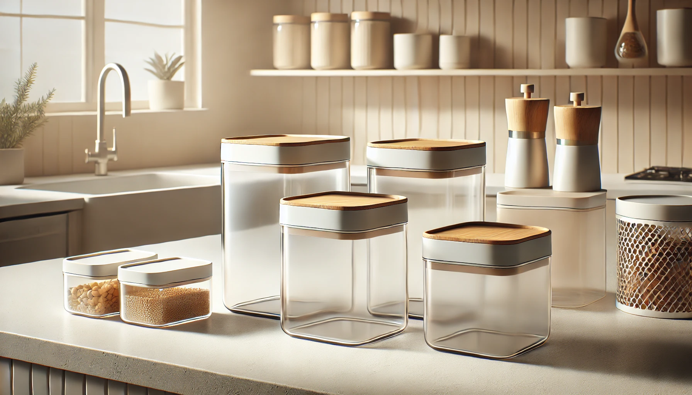

Baby Food Storage Tips

Safe & Smart Ways to Store Homemade Baby Food
Making your own baby food at home is rewarding, nutritious, and budget-friendly, but it’s important to store it safely. Here's how to keep your baby’s food fresh, safe, and easy to serve.
1. Refrigerator Storage (Short-Term)
How long
24 to 48 hours
Best for
Fresh purées you’ll use within the next day or two
Tips
Store in sterilized, airtight containers (glass or BPA-free plastic)
Label with the date and food name
Place food in the coldest part of the fridge (not on the door)
2. Freezer Storage (Long-Term)
How long
1 to 3 months for best quality
Best for
Batch-cooked purées, cereals, or steamed fruits/veggies
Tips
Use ice cube trays or silicone baby food molds for portioning
Once frozen, transfer cubes into labeled freezer bags
Remove as much air as possible to prevent freezer burn
Portion size:
One cube = 1 tablespoon, which is ideal for early weaning stages.
3. How to Thaw Baby Food Safely
Refrigerator:
Transfer from freezer to fridge and thaw overnight
Warm Water Method:
Place sealed container in warm water for gentle thawing
Microwave:
Use defrost mode with caution; stir well and test temperature
⚠ Never refreeze thawed baby food and don’t leave it at room temp for over 1 hour
4. Feeding & Leftover Tips
⁕ Always use a clean spoon when scooping baby food
⁕ Discard any uneaten food that’s been touched or left out
⁕ Only reheat once - avoid multiple warmings
⁕ Don’t feed directly from the storage container - bacteria from baby’s mouth can spoil leftovers
Bonus Tip ❘ Sterilizing Containers
Before storing any baby food:
⁕ Wash all containers with hot, soapy water
⁕ Rinse well
⁕ Sterilize by boiling or steaming if your baby is under 6 months or has sensitive immunity
FAQs ☛ Here